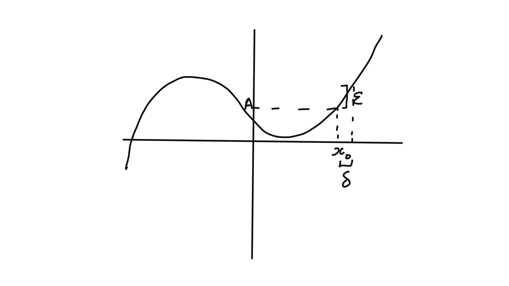

Differential Equations
2021-10-12
Introduction Video
Full notes will be provided on moodle, small typefont indicates an aside, either because the material is non examinable or will be covered in greater detail in a later course.
Four example sheets.
0.1 Schedule
- Basic Calculus (5 lectures)
- First-order linear differential equations (2)
- Nonlinear first-order differential equations (4)
- Higher-order linear differential equations (8)
- Multivariate functions: applications (5)
0.2 Introduction
They describe the rate of change of the dependant variable wrt the independent variable.
Example 0.1 (Newton's 2nd law) \[\begin{align*} m \frac{d^2 x}{d t^2} = F \end{align*}\] If \(F\) depends only on \(t\), then we can simply integrate twice. However, if \(F\) is a function of \(x\) (such as a charged particle in a electric field which varied over space).
Applied course - emphasises methods and results rather than proof or existence.
0.3 Limits
- Informally, if \(\lim_{x \to x_0} f(x) = A\), then \(f(Px)\) can be made arbitrarily close to \(A\) by making \(x\) sufficiently close to \(x_0\)
- Note, does not require \(f(x_0)\) to equal \(A\) (or even to exist) – a limit is a statement about the behaviour of a function in the vicinity of \(x_0\), but not at that point.
- More formally, for a function \(f(x)\) defined on some open interval containing \(x_0\) (but not necessarily at \(x_0\)), \(\lim_{x \to x_0} f(x) = A\) means that
- for any \(\epsilon > 0\), there exists \(\delta >0\) such that \(|f(x) - A| < \epsilon\) for all \(0 < |x - x_0| < \delta\).
- Right hand limit, for example, defined similarly but with \(0 < |x - x_0| < \delta\) replaced with \(0 < x - x_0 < \delta\). A similar procedure can be done for left hand Limits

Figure 0.1: Right hand limit
- We can also define limits at infinity, e.g. \(\lim_{x \to x_0} f(x) = A\) means that
- for any \(\epsilon > 0\), there exists \(X >0\) such that \(|f(x) - A| < \epsilon\) for all \(x > X\).
0.3.1 Properties
- if \(f(x)\) has a limit at a point, it is unique
- If \(\lim_{x \to x_0} f(x) = A\) and \(\lim_{x \to x_0} g(x) = B\), then:
- \(\lim_{x \to x_0} [f(x) + g(x)] = A + B\)
- \(\lim_{x \to x_0} [f(x)g(x)] = AB\)
- \(\lim_{x \to x_0} [f(x) / g(x)] = A / B\). If \(B = 0\), the limit of the quotient does not exist if \(A \neq 0\), but may exist in the indeterminate case \(A = B = 0\)
- \(\lim_{x \to x_0} [f(x) + g(x)] = A + B\)
These properties will be proved carefully in the Analysis 1 course next term, but will be used as without proof in this course.
0.3.2 Proof of uniqueness of limits
Suppose that \(\lim_{x \to x_0} f(x) = A\) and \(\lim_{x \to x_0} f(x) = B\).
In terms of our epsilon-delta definition, this means that for any \(\epsilon > 0\)h there exists \(\delta_A > 0\) and \(\delta_B > 0\) such that
\[\begin{align*} &\text{for }0 < |x -x_0| < \delta_A,\ |f(x) - A| < \epsilon / 2 \text{, where } \epsilon / 2 \text{ is an arbitrary positive quantity.} \\ \color{red}{and} &\text{ for } 0 < |x -x_0| < \delta_A, |f(x) - B| < \epsilon / 2 \end{align*}\]
Now let \(\delta = min(\delta_A, \delta_B)\) and consider \(0 < |x -x_0| < \delta\) - follows that \[\begin{align*} |A - B| &= |[A - f(x)] - [B - f(x)]| \\ &\leq |A - f(x)| + |B - f(x)| \\ &\leq \epsilon \end{align*}\]
Since this holds for all \(\epsilon > 0\), we must have \(A = B\).